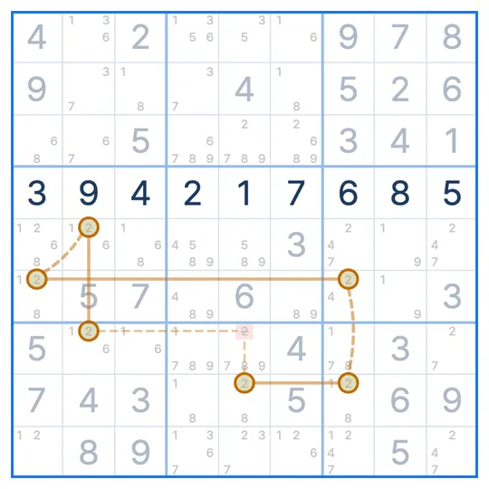

SUDOKU TECHNIQUE · Stage 7 · Chains and Loops
X-Chain
An X-Chain links one digit's candidates with strong and weak links in turn. Any cell that sees both ends of the chain cannot hold that digit.
- Digits to watch
- One
- What you need
- A chain alternating strong and weak links
- What to remove
- Cells that see both ends
The X-Chain pattern
The diagram shows digit 8 only. Solid lines are strong links: the line has exactly two candidates for 8, so if one is not 8 the other is. Dashed lines are weak links: two cells on the same line cannot both be 8. The chain starts at R3C5 and ends at R1C8.
Why does this work?
Suppose the start, R3C5, is not 8. Then the links decide the rest in turn.
Following the chain, the end R1C8 becomes 8. So one of the two ends is always 8. A cell that sees both ends cannot be 8. R1C6 shares a row with R1C8 and a box with R3C5, and R3C9 shares a row with R3C5 and a box with R1C8. Remove the 8 from both.
How to find the X-Chain
- Pick one digit and find lines or boxes with exactly two candidates for it. Those are strong links.
- From the end of a strong link, step to another candidate on the same line or box (a weak link) and attach the next strong link.
- When the chain starts and ends with a strong link, remove the digit from cells that see both ends.
The short X-Chains with two strong links are the Skyscraper, the 2-String Kite and the Turbot Fish.
Take the X-Chain lesson
Try a technique lesson from Sudoku League.
Take the Chains concept lesson first ▸
Loading
Common questions
How long can the chain be?
There is no limit. It only has to start and end with strong links and alternate in between.
Can a weak link stand in for a strong one?
No. A strong link needs "if not this one, then that one", which only holds where a line or box has exactly two candidates. A weak-link slot can be a strong link, though.
Can a chain use several digits?
Yes. A chain that switches digits is an AIC. An X-Chain is an AIC with one digit.
Related techniques
IN THE SUDOKU LEAGUE APP
Stuck? A hint shows you the X-Chain
When you are stuck, a hint draws the chain one link at a time. In Technique Practice you learn the X-Chain on a real puzzle. The first board walks you through the pattern and the reason, and on the next one you find it yourself.

EVENT · SUDOKU LEAGUE PREMIUM
1 MONTH FREE
Unlimited hints · Replay · 6 themes · Lessons
Get your coupon ▸supply